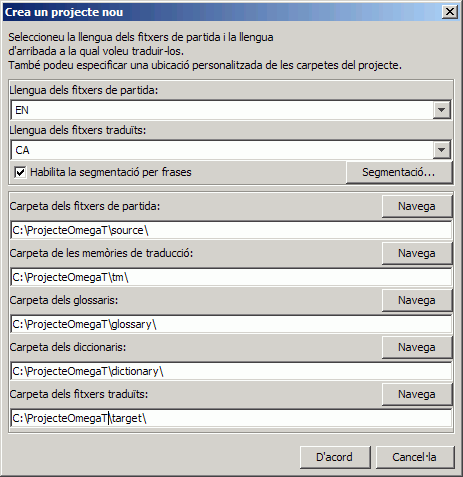
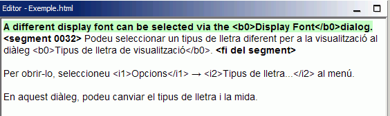
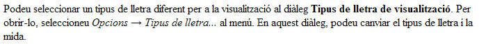

Aquesta guia d'inici ràpid només cobreix els aspectes més bàsics. Idealment, caldria que tots els usuaris llegissin el manual d'usuari per familiaritzar-se amb totes les funcions que ofereix l'OmegaT. A les dreceres utilitzades en aquest document es fa referència al conveni «Ctrl+tecla», però tingueu en compte que els usuaris de Mac han d'utilitzar «cmd+tecla». Als teclats d'Apple, la tecla «cmd» és la que té l'etiqueta «command» o té dibuixada una «poma».
La pantalla de l'OmegaT està formada per un espai amb tres finestres diferents. Podeu canviar la mida de cadascuna mitjançant el ratolí. A la part esquerra hi ha l'editor, la finestra on escriviu la traducció. A la part superior dreta hi ha el visualitzador de coincidències, on es mostren les coincidències trobades a les memòries de traducció. A sota, hi ha el visualitzador de glossaris, on es mostren les coincidències trobades als glossaris.
A la finestra de l'editor, l'OmegaT mostra el text de partida «segmentat» per frases (o per paràgrafs). Aquests segments els heu de traduir un per un. A mesura que aneu avançant d'un segment al següent, les vostres traduccions es van enregistrant en una memòria de traducció. Un cop traduïts tots els segments (o abans, si així ho voleu), l'OmegaT utilitzarà la memòria de traducció per generar els documents traduïts a la carpeta dels fitxers traduïts (per defecte, anomenada «target»).
L'OmegaT organitza la feina de traducció en «projectes de traducció». Per a cada projecte, l'OmegaT crearà un conjunt de carpetes. Aquestes carpetes s'utilitzen per emmagatzemar els documents de partida que voleu traduir, així com els glossaris i les memòries de traducció que vulgueu utilitzar. L'OmegaT també crea la carpeta dels fitxers traduïts (per defecte, «target»), que contindrà els documents traduïts finals.
Seleccioneu Projecte → Nou... al menú.
Navegueu fins a la carpeta on voleu desar els fitxers del projecte i escriviu un nom per al projecte de traducció. S'utilitzarà aquest nom per a la carpeta principal del projecte; tots els fitxers del projecte s'emmagatzemaran en aquesta carpeta o en les seves subcarpetes.
L'OmegaT us demanarà que confirmeu o canvieu les carpetes de projecte que es crearan, mitjançant el següent diàleg:

Podeu acceptar la ubicació de les subcarpetes, però primer assegureu-vos que els codis de la llengua de partida i d'arribada siguin correctes. Seleccioneu el codi de llengua (2 lletres) o el codi de llengua i regió (2 + 2 lletres) a la llista desplegable, o bé escriviu-los manualment (el codi de llengua pot tenir 2 o 3 lletres). Recordeu la ubicació de la subcarpeta dels fitxers traduïts (per defecte, «target»). Si voleu que l'OmegaT segmenti per frases en comptes de fer-ho per «paràgrafs», seria una bona idea revisar les Regles de segmentació.
En fer clic a D'acord per acceptar la configuració del projecte, l'OmegaT us demanarà que seleccioneu els documents de partida per importar-los. Podeu seleccionar fitxers individuals o bé tot un arbre de carpetes (que inclourà tots els fitxers de les respectives subcarpetes). Si heu importat accidentalment els documents incorrectes, o massa documents, senzillament podeu eliminar-los de la carpeta dels fitxers de partida (per defecte, «source») del projecte de l'OmegaT (mitjançant el gestor de fitxers del sistema operatiu, per exemple).
Per comprovar la llista de fitxers que cal traduir, obriu la finestra Fitxers del projecte (menú Projecte → Fitxers del projecte..., si no s'obre automàticament). Si heu hagut de canviar el contingut de la carpeta dels fitxers de partida, recordeu que primer cal tornar a carregar el projecte (menú Projecte → Torna a carregar). Per defecte, l'OmegaT obrirà el primer fitxer de la llista de fitxers. Tingueu en compte que l'OmegaT només pot traduir els fitxers que tinguin els següents formats si coincideixen amb els patrons definits als filtres de fitxers. La resta de fitxers s'ometran.
Un cop definits el projecte i els fitxers que cal traduir, l'OmegaT obrirà el primer fitxer de partida en l'editor. El primer segment es ressaltarà de color verd i es mostrarà una còpia del text de partida a sota, al «camp de traducció». En aquest punt, tot el text fora del camp de traducció romandrà protegit i no el podreu modificar. Escriviu-ne la traducció entre les etiquetes <segment 0001> i <fi del segment>, sobreescrivint el text de partida. Premeu «Retorn» per avançar fins al segment següent. Nota:
A l'entrada del menú principal Visualització, podeu canviar la configuració de la subfinestra de l'Editor (per exemple, per mostrar o no el text de partida, per ressaltar el text traduït, etc.)
Quan premeu «Retorn» es realitzen diverses operacions de forma transparent: L'OmegaT afegeix la parella de segments (el segment de partida i la respectiva traducció) a la memòria de traducció i tradueix automàticament tots els segments idèntics que detecti a la resta dels fitxers del projecte. També cerca a la memòria de traducció i al glossari les possibles coincidències per al següent segment sense traduir.
Si l'OmegaT troba a la memòria de traducció coincidències parcials (amb una similitud del 30% o més) per al següent segment, les mostra al visualitzador de coincidències. Per defecte, la primera coincidència se selecciona automàticament al visualitzador de coincidències.

Per inserir coincidències de la memòria de traducció al camp de traducció, podeu utilitzar les següents dreceres de teclat:
Ctrl+I per inserir la coincidència presseleccionada a la posició actual del cursor, o bé...Ctrl+R per sobreescriure tot el segment amb la coincidència presseleccionada.Si s'han trobat diverses coincidències i preferiu no utilitzar la presseleccionada:
Ctrl+2 per a la segona coincidència, Ctrl+3 per a la tercera, etc.Ctrl+I o Ctrl+R descrites anteriorment.(Podeu configurar l'OmegaT de manera que, en obrir un segment, insereixi automàticament al camp de traducció la primera coincidència que tingui un determinat percentatge mínim de similitud. Per fer-ho, aneu a Opcions → Comportament de l'edició...)
Els termes que es trobin als glossaris i als diccionaris que hàgiu inclòs al projecte es mostraran com a referència a les subfinestres del glossari i del diccionari.
L'OmegaT ofereix un gran ventall de funcions de cerca. Obriu la finestra de cerca prement Ctrl+F i escriviu la paraula o la frase que voleu cercar al camp «Cerca». També podeu seleccionar una paraula o una frase de qualsevol lloc de la subfinestra Editor i prémer Ctrl+F. En aquest cas, la paraula o la frase apareixerà automàticament al camp «Cerca».
A la subfinestra Google Traductor, es mostrarà automàticament un suggeriment de la traducció del segment actual. Podeu inserir-lo al segment d'arribada prement Ctrl+M.
Un cop traduïts tots els segments (o abans, com vulgueu), l'OmegaT actualitzarà els documents traduïts utilitzant les traduccions emmagatzemades a la memòria de traducció. Per fer-ho, seleccioneu Projecte → Crea els documents traduïts al menú. L'OmegaT generarà les versions traduïdes de tots els documents traduïbles a la carpeta dels fitxers de partida del projecte (per defecte, «source»), fins i tot dels documents que encara no s'hagin acabat de traduir. Els fitxers traduïts totalment o parcial es desaran a la carpeta dels fitxers traduïts del projecte (per defecte, «target»). Per acabar la traducció, obriu els fitxers traduïts amb les corresponents aplicacions associades (navegador, processador de textos, etc.) per comprovar-ne el contingut i el format. Si cal, podeu tornar a l'OmegaT per tal de realitzar les correccions necessàries (si ho feu, no oblideu tornar a crear els documents traduïts).
L'OmegaT s'assegura que no es perdi el format dels documents de partida (negreta, cursiva, etc.) mitjançant l'ús d'etiquetes especials. Les etiquetes de l'OmegaT estan formades per una o més lletres seguides d'un o més dígits, i s'utilitza el caràcter «/» com a tancament (per exemple: <f0>, </f0> <br>, </s2>, etc.). Aneu amb compte en manipular aquestes etiquetes i assegureu-vos d'incloure-les correctament als segments traduïts (vegeu Operacions amb etiquetes).
En aquests exemples, s'han ressaltat les etiquetes per facilitar-ne la visualització, tot i que dins l'OmegaT no apareixeran ressaltades. L'OmegaT ometrà les etiquetes HTML ressaltades de color blau, ja que es troben completament fora del segment. En canvi, l'OmegaT haurà de manipular les etiquetes ressaltades de color verd perquè es troben dins del segment. El següent exemple mostra un segment en format HTML:
<p>Podeu seleccionar un tipus de lletra diferent per a la visualització al diàleg <b>Tipus de lletra de visualització</b>. Per obrir-lo, seleccioneu <i>Opcions</i> → <i>Tipus de lletra...</i> al menú. En aquest diàleg, podeu canviar el tipus de lletra i la mida.</p>
A l'OmegaT es mostrarà així, amb la traducció al català:

Quan l'OmegaT hagi creat el document traduït, el codi HTML tindrà aquest aspecte:

L'OmegaT no detecta automàticament les etiquetes incorrectes del document traduït. Per tant, abans de lliurar el document al client, cal que comproveu si hi ha errors d'etiquetes.
Seleccioneu Eines → Valida les etiquetes al menú. Es mostrarà una taula amb tots els segments en els quals les etiquetes del text de partida no concordin amb les del text traduït. Feu clic al número de segment. Anireu automàticament al segment potencialment incorrecte a l'Editor, on podreu corregir-ne les etiquetes. Premeu Retorn per validar el segment corregit i comproveu-ne la correcció tornant a prémer Ctrl+T.
En alguns casos, fins i tot és possible que els errors d'etiquetes no deixin obrir el document. Per tant, és important que corregiu tots els errors d'etiquetes abans de crear els documents traduïts. Finalment, cal que comproveu el format final del document traduït obrint-lo amb el corresponent visualitzador o editor.
En alguns llenguatges de programació (p. ex. PHP, C), es fan servir etiquetes especials com a text variable en aquelles cadenes que s'utilitzen en combinació amb la funció printf. L'OmegaT pot detectar i validar aquestes etiquetes si habiliteu l'opció corresponent. Seleccioneu Opcions→ Validació de les etiquetes... al menú. Podeu triar entre una validació simple i una validació completa. La validació simple només comprova les variants més simples dels possibles valors de text variable. És útil si el codi font no conté els textos variables més expressius i complexes o si obteniu molts falsos positius.